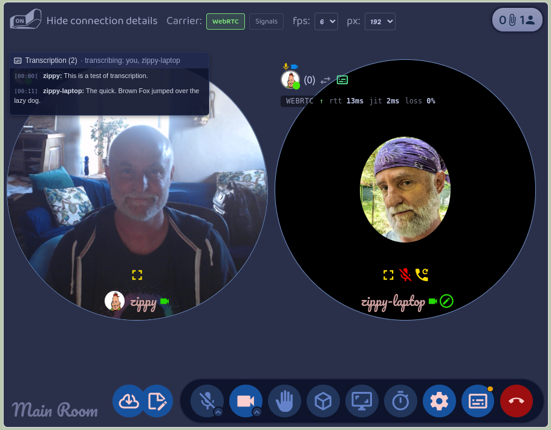
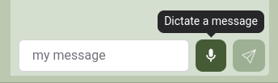
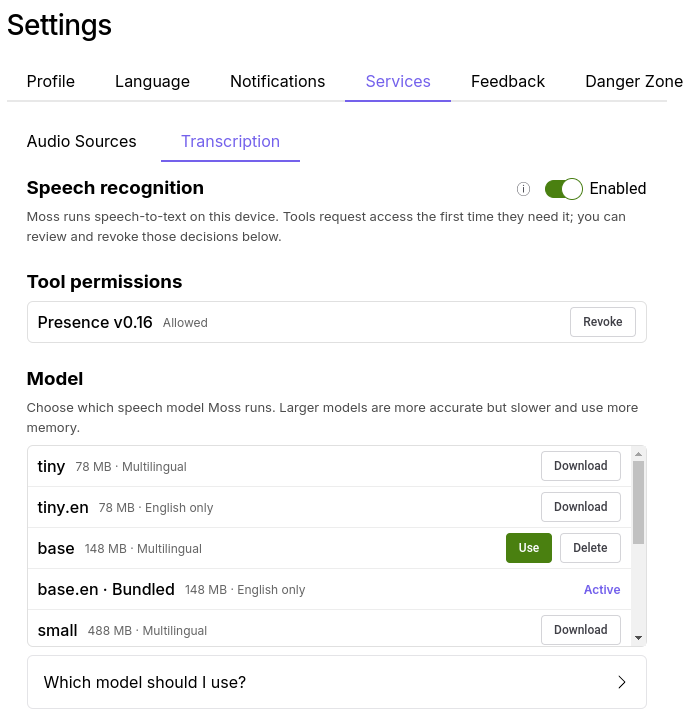

Local AI, together
Moss can now turn speech into text. It does this on your own computer, with an open speech model, and nothing you say is sent anywhere to be processed. That part is what people usually mean by "local AI", and it's good. But it's the smaller half of what we've done.
The larger half is the pattern: collaborative transcription. Instead of one machine listening to everyone, each person's computer transcribes that person's own voice and shares the text with the others. The transcript the group sees is assembled from pieces that each came from the speaker's own machine. Nobody's audio goes to a server, and nobody's audio goes to anyone else's AI either. We've implemented this in Presence, our video call tool, and it's what we mean by collaborative local AI.
A call that transcribes itself
Anyone in a Presence call can ask for transcription. Everyone else gets a yes-or-no prompt, and those who say yes start transcribing their own microphone. You can also set your copy of Presence to say yes automatically. Each person's words show up in the room's transcript as they finish a sentence, labelled with their name, and a small subtitles icon on their tile shows who is transcribing.

The pattern has some really nice advantages, and you can see each one in how Presence does it.
- The cleanest audio. Each computer hears its owner's voice straight from the microphone, before it's compressed and sent over the network. Presence reads the raw microphone track, so the model works from the best signal there is, not from what survived the call.
- Attribution for free. The person who transcribed a line is the person who said it. Presence never has to work out who was speaking; every line arrives already labelled, from the speaker's own Moss.
- The work is spread out. Each computer transcribes one voice. A call with eight people costs each of them the same as a call with two, and no one machine has to be big enough to transcribe everyone.
- Each person decides. Transcription is something you turn on for yourself, not something done to you. In Presence you say yes or no to a request, and only your own voice is affected by your answer.
Presence keeps a transcript per visit to a room, from when you join to when you leave, with everyone's lines in it. You can look at past transcripts from the room's card, read them, download them as Markdown, or delete them. They're stored on your computer, like everything else in Moss.
One service, every tool

Presence is the first tool to use transcription, but it doesn't own it. Transcription is a Moss service, and any tool can ask for it. Moss itself already uses it in a second place: the Foyer, each group's built-in chat, has a microphone button next to the message box, so you can dictate a message, fix it up, and send it. You turn the service on under Settings → Services → Transcription, next to Local Discovery from last week's post. It's off by default. The first time a tool asks to use it, Moss asks you, and you can withdraw that permission later from the same place.

This is the pattern we want for Moss. Running a speech model is a big thing to ask of a tool: there's a 140 MB model to ship, a runtime to build for every platform, and memory to manage. If every tool did that on its own, you'd have five copies of the same model and five switches to find. Instead, Moss does it once, and a notes tool that wants to transcribe a recording, or a chat tool that wants voice input like the Foyer's, gets it with a few lines of code. And because Moss does it, you decide once, in one place, what the AI on your machine is allowed to hear.
Transcription is the first service of this kind. The same shape, a model Moss runs on your machine that tools ask to use with your permission, will carry the others we have planned.
For the adventurous: transcription is in Moss 0.16.0-dev.10, which is where you can download other speech models, including multilingual ones, from the Transcription settings. Moss comes with an English-only model, so it works out of the box. The call transcripts are in Presence 0.16.0. Both are dev releases, meant for testing, so expect rough edges. Everyone you want to try it with needs the same Moss version.
For the technically curious
Feel free to skip this part.
-
The runtime is whisper.cpp, built
per platform and run by Moss's main process as a sidecar whisper-server. Moss ships the
ggml-base.enmodel (about 141 MB). From dev.10, Settings also lets you download and switch to others, from tiny to larger multilingual ones. The model loads on first use, which takes one to ten seconds, stays loaded while any session is open, and unloads after five minutes idle. -
The API is
weaveClient.localModels.asrin@theweave/api. A tool checkscapabilities(), opens a session, pushes PCM16 audio at whatever sample rate it has, and gets back one event per utterance. Moss resamples, runs an energy-based voice activity detector, and commits a transcript after about 500 ms of silence. The full guide is docs/build/transcription.md in the Moss repo. - Consent has two gates: the global switch in Settings, and a per-tool decision Moss asks for the first time a tool opens a session. Turning the switch off, or revoking a tool, closes its open sessions.
- Presence reads the raw microphone track, before mixing and before WebRTC encoding, so shared system audio is never transcribed as the speaker's words. Each committed utterance goes to the other participants over the room's existing signal channel, which means it's signed by the speaker's own agent key. Transcripts are stored per visit in IndexedDB and rendered to Markdown on demand.
- What's next is a fallback where another participant volunteers to transcribe for someone whose machine can't.